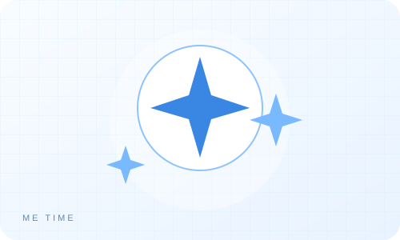

PhD Application Portfolio · Seoul National University
Me Time
Creative interests and community activities documented in my CV.

Curiosity beyond the lab
My CV does not list personal hobbies, so this page highlights documented creative and community interests rather than guessing about how I spend my free time.
Creative technology
VR and metaverse learning experiences
Participated in a VR Metaverse Educational Content Development Program, exploring immersive environments for learning.
Making & design
CAD design
Completed a CAD Design Training Program, adding another way to make ideas visible and tangible.
Science communication
Sharing science with others
Participated in the SCOF Science Communication Festival and educational outreach activities.
Community
Learning with peers
Joined student academic and computer study groups, including the Education Journal Club and SCSC-SNU Computer Study Club.
If you share a hobby or personal photo, this page can be updated to feel more personal.